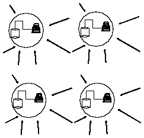
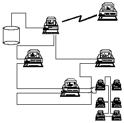
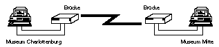
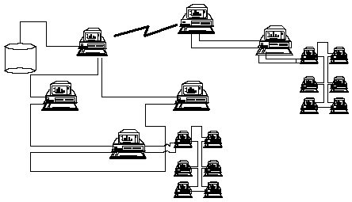

Die Konstellation, die der Zweite Weltkrieg und die nachfolgende politische Entwicklung in Bezug auf das Ägyptische Museum in Berlin hinterlassen hat (Auslagerung der Sammlungsbestände in verschiedene Teile Deutschlands und spätere Rückführung der einzelnen Teile in die jeweiligen Besatzungszonen), stellt heute die größte Herausforderung an die Mitarbeiter des Ägyptischen Museums dar. Erstmals seit dem Zweiten Weltkrieg besteht jetzt die Möglichkeit der Erstellung eines gemeinsamen Inventars, einer damit verbundenen Revision und somit einer genauen Erfassung der Kriegsverluste und -schäden. Ein entstehendes Informationsnetz soll die beiden, etwa 10 Kilometer entfernten Museumsstandorte miteinander verbinden und so die Möglichkeit schaffen, die bei der Forschung und täglichen Arbeit anfallenden Informationen auszutauschen. Ein großer Vorteil bei der Erstellung des Netzes liegt darin, daß in beiden Teilen des Museums moderne Technik der Datenverarbeitung eingesetzt wird. In der vorliegenden Arbeit möchte ich die einzelnen technischen Möglichkeiten besprechen, die man zur Vernetzung von getrennten Computersystemen einsetzen kann.
Zielsetzung für die Einrichtung des Netzes
Das Netz soll zur Erfüllung der Anforderungen an den Wissenschaftlichen Arbeitsplatz (wap) beitragen. Ein moderner wap verfügt danach über einen pc, weiterführend müssen diese pc vernetzt sein. Weiterhin soll das zu erstellende Netz die beiden Teile des Berliner Ägyptischen Museums in die Lage versetzen, miteinander auf Wegen der Datenfernverbindung (dfv) zu kommunizieren. Dabei soll es möglich werden, auf möglichst komfortable Weise Daten zur Verfügung zu stellen und auszutauschen. Das Ägyptische Museum der Staatlichen Museen zu Berlin, als ein bedeutendes Zentrum der ägyptologischen Forschung in der Welt (mit einer der größten ägyptischen Sammlungen), würde hier ein Beispiel geben, wie moderne Wissenschaft arbeiten kann und arbeiten sollte.
Die NetzwerkplanungWenn man die Einrichtung eines Netzes plant, so muß man damit beginnen, die Anforderungen zu ermitteln, die das entstehende Netz erfüllen soll. Dazu habe ich die folgende Checkliste erarbeitet:
Problemstellung: Antwort:
Soll Einzelfiletransfer erfolgen? nein
Müssen auch Ton und Video übertragen werden? Ton nein
Video(Bilder): ja
Überschreitet das Netz internat. Grenzen? nein[1]
Ist der Datenfluß konstant? nein
Art der Verbindung: pc zu pc? ja
pc zu lan? [2] eventuell [3]
lan zu pc? eventuell
Werden verteilte Datenbanken benutzt? nein
Müssen sich Laptop-Benutzer in das Netz einwählen können? nein
Welches Betriebssystem soll verwendet werden? ibm os /2
Nach dem Abschluß der Modellierung einer Datenbank wurde mit der
Erfassung bereits revidierter Sammlungsbestände begonnen. Dabei wird das
relationale Datenbanksystem dbms des ibm os /2 benutzt. Über die
verschiedenen Arbeitsschritte bei der Konzeption relationaler Datenbanken haben
an dieser Stelle bereits E. W. Adams und N. Strudwick sowie E. Loring
ausführlich berichtet.[4] Wir haben uns beim Datenbankdesign aus
verschiedenen Gründen nicht für das Schema der verteilten
Datenbanken entschieden. Bei diesem Prinzip geht man davon aus, daß
die einzelnen Teilnehmer im Netz ihre Datenbestände lokal auf den eigenen
Rechnern behalten und mit eigenen Datenbanken arbeiten. Das Schema der
verteilten Datenbanken ist ein leistungsfähiges Modell, aber wenn man sich
für dieses Modell entscheiden will, dann sollte man folgende Fakten im
Kopf behalten:1. Bei der Verwendung von verteilten Datenbanken kann man nicht ohne weiteres ein relationales Datenbankdesign verwenden. Die Einrichtung von verteilten Datenbeständen auf entfernten Rechnern führt zwangsläufig zu einem anderen Datenbankprinzip, den Netzwerkdatenbanken, die ich hier nicht näher besprechen möchte.[5]
2. In gewisser Hinsicht legt man sich bei der Wahl zwischen Netzwerkdatenbank oder relationaler Datenbank fest. Die Struktur einer Datenbank später zu ändern bringt immer große Schwierigkeiten mit sich und man riskiert auch bei größter Vorsicht Datenverlust. Eine Änderung von Netzwerkdatenbank zu relationaler Datenbank stellt besonders wegen der Unterschiede der inneren Logik der beiden Systeme ein Problem dar. In den nächsten Jahren wird der Anteil der revidierten Sammlungsbestände stark ansteigen (und die Datenbank somit schnell wachsen). Mit einer ebenfalls in den nächsten Jahren erfolgenden Zusammenlegung der noch getrennten Teile der Sammlung wird das wan überflüssig und ein lan reicht aus. Zu diesem Zeitpunkt müßte dann eine Umstrukturierung der Datenbanken unternommen werden, die aus den oben beschriebenen Gründen nicht ratsam ist.
3. Die technische Implementation eines wan, das mit verteilten Datenbanken arbeitet (also ein Netzwerkdatenbankmodell) ist sehr viel komplizierter als wenn man mit einem zentralen Massenspeicher arbeitet. Ich will zur Verdeutlichung dieses Problems lediglich andeuten, daß bei verteilten Datenbanken eine der größten Schwierigkeiten darin besteht, eine Synchronisierung der Datenbankzugriffe zu gewährleisten. Die Integrität der Datenbank darf zu keinem Zeitpunkt gefährdet werden, auch wenn mehrere Nutzer gleichzeitig Daten aus denselben `Datenbanken' abfragen oder in diese eingeben. Es darf zu keinen sogenannten `deadlocks' [6] kommen. Obgleich im Regelfall die Datenbanksysteme selbst auf solche kritischen Punkte achten (und sich mit den Betriebssystemen abstimmen, für die sie programmiert wurden) muß man Kenntnis von solchen Problemen haben, wenn man (wie wir) selbst als Programmierer in den Arbeitsablauf des Datenbanksystems eingreifen möchte.
Bis jetzt haben wir in den beiden, räumlich noch getrennten Sammlungsteilen separat damit begonnen, Daten in die definierte Datenbank der einzelnen Rechner einzugeben. Die Struktur der Datenbank ist auf allen Rechnern gleich.[7] Eine Verbindung zwischen den einzelnen Rechnern besteht nicht, so daß unsere derzeitige Situation durch Fig. 1 gut verdeutlicht wird.

Fig. 1
Anwendung
der ChecklisteMit einem Einzelfiletransfer ist niemandem geholfen. Einzelfiletransfer kann höchstens dazu genutzt werden, zwischen Datenbanken auf verschiedenen Maschinen Backups auszutauschen. Der automatische Austausch von bestimmten Tabellen aus der einen Datenbank in eine andere ist sehr kompliziert und ohne spezielle Software unmöglich.[8] Ein Datenaustausch im Einzelfiletransfer, etwa nach dem Arbeitsprinzip von E-Mail oder ähnlichen Systemen ist nicht sinnvoll, da es beim Arbeiten mit Datenbanken (das heißt also Dateneingabe und Datenabfrage) so gut wie nie zu Suchergebnissen in Form von ganzen Files kommt. Rückgabewerte in relationalen Datenbanken sind immer Mengen, die in Form von Tabellen an den Punkt der Abfrage zurückgelangen und dem Nutzer dort zur Verfügung stehen.

Fig. 2
Die
Übertragung von Bild und Ton wird in diesem Projekt vorerst so
organisiert werden, daß Bilder von Objekten in Form von Bitmap-Files
o.ä. gespeichert werden, die über ihren Dateinamen zugänglich
sind. Zur Speicherung könnte eine ibm 3363 worm-Disk genutzt werden (die
Kapazität von Festplatten reicht aber am Anfang auf jeden Fall auch aus,
da in neuen Rechnern kaum noch Kapazitäten unter 100 mb auftreten). In
einem einzurichtenden Netz würde sich die Art der Kommunikation
zunächst auf eine Kommunikation zwischen pcs beschränken. Bislang
wird in den Sammlungsteilen jeweils mit nur einem bzw. zwei ps /2
gearbeitet. Künftig ist es aber durchaus möglich, daß weitere
pc angeschafft werden, die dann untereinander über Token-Ring verbunden
werden würden und so an dem Netz teilhaben würden. Auch der
wahrscheinlich über kürzeren oder längeren Zeitraum erfolgende
räumliche Zusammenschluß einzelner Institutionen würde zur
Bildung von lan führen. Hier käme es dann zu einer lan zu
pc bzw. pc zu lan Verbindung (Fig. 2 zeigt einen PC, der
über dfv mit einem lan in Verbindung steht). Dabei ist der
Datenfluß nicht konstant sondern steigt in den Momenten an, wenn
wirklich Daten angefordert werden. Bei intensiver Arbeit werden aber die
Momente, in denen Daten transferiert werden müssen, stark zunehmen, so
daß man letztlich doch zu einem relativ häufigen, wenn auch nicht
konstantem Datenfluß gelangt. Der Aufbau eines Netzes lohnt sich nur
dann, wenn es auch wirklich auslastend benutzt wird. Die Netzinstallation
Bei der Einrichtung eines wan ist man immer auf die Zusammenarbeit mit einem örtlichen Unternehmen der Telekommunikation angewiesen. Von Land zu Land wird es hier Unterschiede hinsichtlich der Angebote geben, die die einzelnen Postunternehmen machen können. Grundsätzlich jedoch gibt es feste Prinzipien (die ich hier in stark vereinfachter Form erläutern möchte), nach denen eine Übertragung von Daten in Netzen erfolgen kann. Sie unterscheiden sich nach Datentransportgeschwindigkeit und der Art und Weise, wie die Daten transportiert werden. Danach kann man Aussagen über die Zweckmäßigkeit für die jeweilige Verwendung treffen.
Die Datentransportgeschwindigkeit stellt eine variable Größe dar und hat keinerlei Einfluß auf die Art und Weise des Datentransportes. Von ihr hängt die Übertragungsdauer ab. Viel entscheidender ist aber die Frage nach der Art des Datentransportes. Man unterscheidet hier:
1. Paketvermittelten Datentransport
2. Leitungsvermittelten Datentransport
3. Direktrufanschlüsse und Direktrufverbindungen
Bei paketvermitteltem Datentransport kommt eine echte Verbindung beider Teilnehmer nicht zustande. Die Daten werden beim Absender in `Pakete' verpackt und getrennt abgeschickt. Beim Empfänger werden die Pakete dann wieder in der richtigen Reihenfolge zusammengesetzt und stehen danach zur Verfügung. Die Verbindung ist nie konstant.
Beim leitungsvermittelten Datentransport wird tatsächlich eine direkte Verbindung zwischen den Teilnehmern aufgebaut. Das kann mitunter eine längere Zeit dauern und hängt immer davon ab, wie stark die Leitungen gerade frequentiert sind. Auch diese Verbindung wird abgebrochen, wenn der Datentransfer erfolgt ist.[9]
Bei diesen beiden Arten des Datentransportes berechnen sich die Kosten durch:
a) Bereitstellung des Anschlusses
b) Gebühren für die bereitgestellten Dienste
c) Menge der übertragenen Daten
Die Direktrufanschlüsse und Direktrufverbindungen sind das verständlichste Prinzip, denn es entspricht den gewöhnlichen Telefonleitungen. Allerdings sind die zum Datentransport benutzten Leitungen leistungsfähiger. Verständlicherweise kann man sie nur einsetzen, wenn sich die Anzahl der Teilnehmer und vor allem deren Lokation nicht ändert. Genau aus diesem Grunde ist es diese Art der Verbindung, die zwischen den Museumsstandorten aufgebaut werden wird (es ist außerdem in Deutschland die kostengünstigste Art der Verbindungsherstellung). Die Kosten für die übertragenen Daten entfallen hier, da ja die Leitung als solche angemietet wird. Solche Leitungen rechnen sich natürlich nur dann, wenn es sich um Leitungen innerhalb einer Stadt handelt.

Fig. 3
Konkret
wird am Ägyptischen Museum die erste Vernetzungsstufe wie folgt aussehen:
die beiden Standorte werden mittels eines gemieteten Direktrufanschlusses
verbunden (Fig. 3). Die in der Abbildung dargestellten Brückenrechner
dienen lediglich der Protokollübersetzung. Von der Leistung her sind die
Anforderungen an die Gateways nicht besonders hoch; ein älterer
Rechner der AT-Klasse genügt hier völlig, er sollte jedoch einen
Koprozessor besitzen. Hierbei wird eine der leistungsfähigsten Techniken
angewendet, die auf dem Markt der Vernetzung zu finden sind: der ibm
Token-Ring.[10] In Fig. 4 wird an beiden Standorten ein lokales Netz
emuliert. Der `Gateway'-Rechner sorgt für die
Protokollübersetzung zwischen Modem (das Teil, das die Daten in die
Telefonleitung schickt und aus der Leitung liest) und Token-Ring. 
Fig. 4
Die
Daten selbst werden zentral an einem der beiden Standorte gespeichert (auf
einem PS /2 mit 300 mb Speicherkapazität). Die Konsistenz
der Datenbank wird dadurch in keiner Weise gefährdet (s.o.).Weitere Perspektiven zum Ausbau des Netzes
Das Konzept des Token-Ring ist auch über längere Zeit eine ausbaufähige Strategie. Oben wurde bereits festgestellt, daß die Verbindung eigentlich zwischen zwei Netzen hergestellt wird. Somit ist natürlich auch die Möglichkeit impliziert, daß diese Netze ausgebaut werden können, indem an das bestehende lokale Token-Ring-Netz einfach weitere PC angeschlossen werden. Diese müssen weder unbedingt zum Ägyptischen Museum gehören (obwohl es natürlich sehr sinnvoll wäre, weitere Arbeitsplätze mit PC auszustatten und ihnen über das bestehende Netz Zugriff auf das in der Datenbank vorliegende Inventar des Ägyptischen Museums zu ermöglichen [11]), noch unter ein und demselben Betriebssystem betrieben werden. Zum Beispiel ist ein Anschluß von PC unter dem weit verbreiteten Betriebssystem PC- oder MS-dos ohne weiteres durch den Einbau einer Token-Ring-Netzwerkkarte möglich, ohne daß diesen Nutzern irgendein Nachteil gegenüber den os /2 Nutzern entsteht (auch eine Einbindung von Rechnern der Apple-Macintosh-Familie ist ohne weiteres möglich).
Allerdings sollte eine museumsweite Einführung von os /2 ernsthaft in Erwägung gezogen werden, da dieses Betriebssystem besonders in Netzen, aber auch in Einzelplatzanwendungen gegenüber dem normalen dos enorme Vorteile aufzubieten hat (multitasking- multithreading Operationsmodi; einheitliche, im Betriebssystem integrierte Nutzeroberflächen [Presentation Manager] und die Workplace-Shell; volle Ausnutzung des Befehlssatzes und der Adressierungsschemata der I80386 Prozessorfamilie, dadurch schnellere und effizientere Codeausführung; integrierte Möglichkeiten zur Verwaltung und Teilnahme an Netzen [Communications Manager]; integriertes Datenbanksystem, das selbst den höchsten Ansprüchen der Informatik genügt [in der Tat ist es uns nur durch dieses System möglich geworden, unsere Datenbank in der jetzt vorliegenden Form zu entwickeln]; mehrere Operationsmodi des Betriebssystems os /2 selbst [problemlose Ausführung von allen `alten' dos-Programmen wie glyph o.ä., auch die Ausführung von Windows-Programmen ist ohne eine Installation von MS-Windows in der gewohnten Fenster-umgebung durchaus möglich]).
Eine Erweiterung dieses Netzes, sowohl lokal als auch global (also innerhalb Berlins) ist denkbar und erwünscht. Innerhalb eines lan (und der Token-Ring ist ja nichts anderes) kann die Entfernung zwischen den einzelnen pc bis zu 2000 Metern betragen. Das legt eine Verbindung der anderen, ebenfalls getrennten Sammlungen der Staatlichen Museen zu Berlin nahe. Es käme zur Entstehung lokaler Netze, die über die `Standleitung' verbunden wären. Über diese Leitung wäre auch ein Anschluß an internationale Netze möglich. Internationale Netze werden erreichbar, indem man sich an Institutionen wendet, die mit solchen Netzen verbunden sind (wie z.B. Universitäten), sogenannte Netzknoten. Zu diesen Knoten baut man dann Verbindungen der gewünschten Art auf und nutzt den Knoten als Brücke.
Danksagungen:
Die hier vorliegende Arbeit ist ein Ergebnis eines Studienprojektes der ägyptologischen Institutionen Berlins mit der ibm Deutschland GmbH.
Ich danke Herrn Prof. D. Wildung sehr für die Möglichkeit, an diesem Projekt mitzuarbeiten. Ferner danke ich:
Herrn J. Elsler (ibm Deutschland), der mit seinen Ratschlägen auf der technischen Seite entscheidend zum Gelingen des Projektes beigetragen hat;
Herrn Dr. P. M. Wolf (Institut für Sudanarchäologie und Ägyptologie der Humboldt-Universität zu Berlin); auf die Zusammenarbeit mit ihm, insbesondere beim Datenbankentwurf und der Konzeption des Anwendungsprogramms für den Benutzer, hätte ich nicht verzichten können; auf der praktischen Seite der Anwendungsentwicklung war er stets mein Partner und ich verdanke ihm viele Ideen und Anregungen;
Herrn Dr. K. H. Priese (Staatliche Museen zu Berlin-Ägyptisches Museum) für seine wertvollen Anregungen in Bezug auf die tägliche Museumsarbeit (wie zum Beispiel Revisionen) und die Verarbeitung der Ergebnisse, die dieser Arbeit entstammen;
Herrn Dipl. phil. K. Finneiser für seine Arbeiten am Thesaurus;
Herrn H. Kölsch (ibm Deutschland) für die großzügige Unterstützung während der gesamten Projektdauer;
Anregungen und Fragen erbeten:
Florian Steinborn
Fehrbelliner Str. 44
O-1054 Berlin